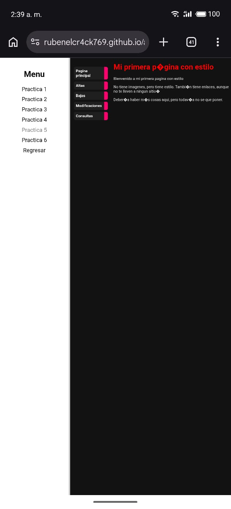

Aquí dimos un gran salto visual al dejar de lado las páginas en blanco y negro para empezar a darles diseño mediante un archivo externo llamado practica5.css. La gran ventaja de esto es que pudimos separar el código que da estructura (HTML) del código que se encarga del diseño (CSS). Aprendimos a utilizar propiedades esenciales como color para cambiar el tono de las letras, background-color para pintar los fondos de los bloques, y font-family o font-size para darle estilo y jerarquía al texto. También fue clave entender cómo funcionan el margin y el padding, que nos sirven para empujar los elementos y controlar los espacios en blanco alrededor de ellos. Por último, aprovechamos estos estilos para transformar una lista normal hecha con ul y li en un menú de navegación interactivo con enlaces (a) mucho más atractivo.